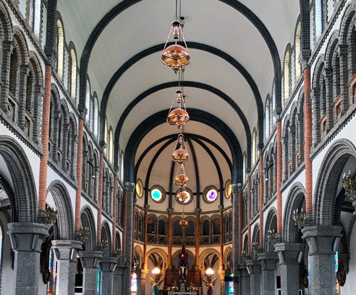

|  |
We usually talk easily about infinity. Like ‘I'm a man with unlimited potential’ or ‘I'll love you forever’. But if you take a moment to think about it, infinity is never an easy or light concept.
Sometimes when I think deeply about infinity, I fear its endlessness. Even if I recall the most distant time and the greatest amount I can imagine, the weight of the fact that infinity is beyond seems to weigh on my chest. I stop thinking about it when I'm out of breath and my head gets dizzy. My presence in the face of the idea of infinity is too small and weak.
My fear of death is in fact closer to the fear of eternity beyond death than death itself. People often use the term "eternal rest" but can we put "eternal" and "rest" on the same line? Isn't it already a pain in the sense of eternity?
I can't understand infinity, and I fear eternity.